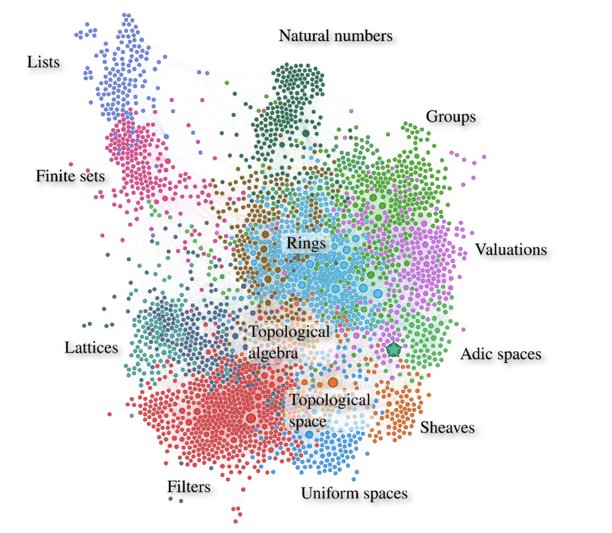
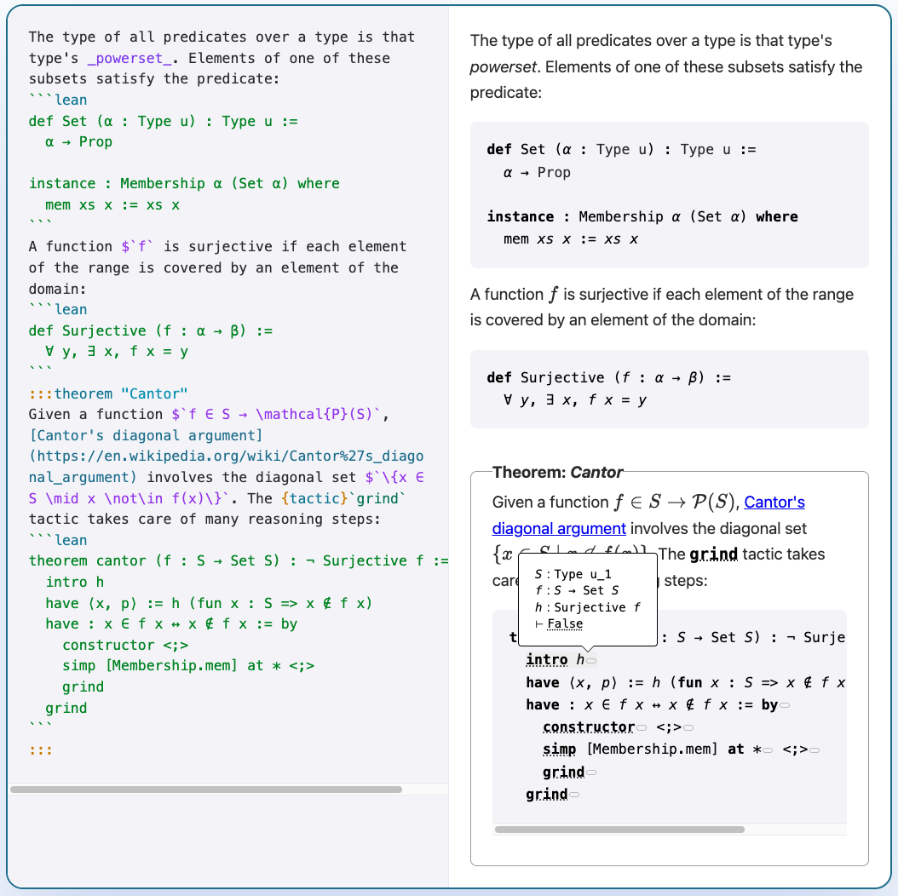
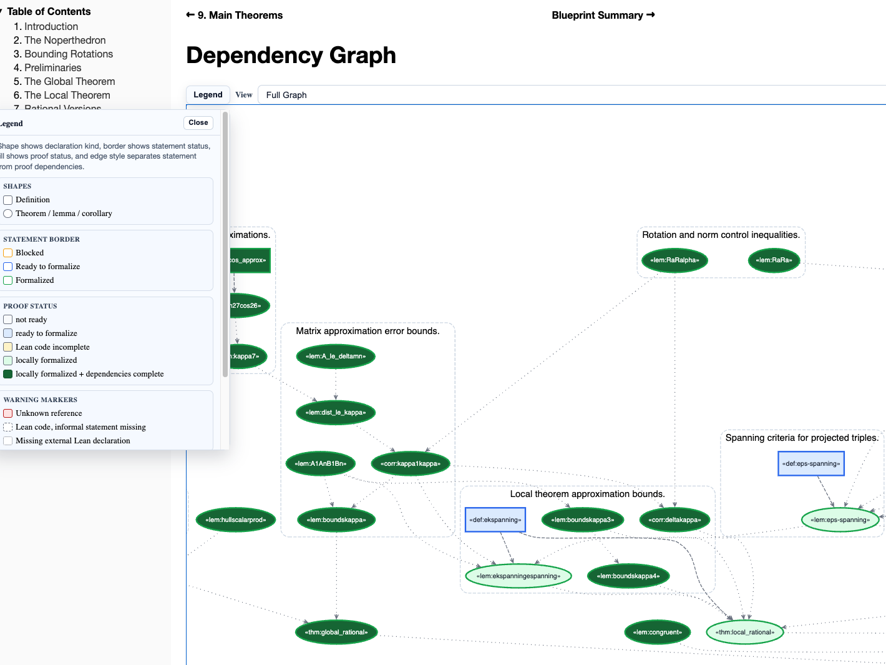

Lean: Machine-Checked Proofs as Infrastructure for AI and Science
"Vibe Proving"
Alexeev & Mixon resolved a $1000 Erdős prize problem.
"We used ChatGPT to vibe code a Lean proof."
The proof is machine-checked. Paper

What is Lean?
-
A programming language and a proof assistant.
-
Same language for definitions and proofs.
-
Lean is implemented in Lean. Very extensible.
-
The math community made Lean their own: 50,000+ lines of extensions.
-
Lean is scalable.
-
Small trusted kernel. Proofs can be exported and independently checked.
Theorem Proving Is a Game
"You have written my favorite computer game." — Kevin Buzzard
The "game board": you see goals and hypotheses, then apply "moves" (tactics).
def odd (n : Nat) : Prop := ∃ k, n = 2 * k + 1
theorem square_of_odd_is_odd : odd n → odd (n * n) := by
intro ⟨k₁, e₁⟩
simp [e₁, odd]
exists 2 * k₁ * k₁ + 2 * k₁
lia
Each tactic transforms the goal until nothing remains.
The kernel checks the final proof term.
The Kernel Catches Mistakes
example : odd 3 := ⟨2, by decide⟩
You don't need to trust me or my automation. You only need to trust the small kernel.
An incorrect proof is rejected immediately.
Lean has multiple independent kernels.
You can build your own and submit it to arena.lean-lang.org.
The State of Lean
250,000+ unique installations: VS Code (143K+) + Open VSX (107K+).
Ecosystem: 9,000+ GitHub repositories depending on Lean.
Libraries: Mathlib, PhysLean, CSLib.
Industry: AWS, Google, Microsoft, Mistral, Nethermind, Galois, others.
"Lean has become the de facto choice for AI-based systems of mathematical reasoning." — ACM SIGPLAN Award
The Lean Mathematical Library
-
Formal Mathematics = Machine-Checkable Mathematics.
-
270,000+ formalized theorems.
-
750+ contributors.
-
2.2M+ lines of Lean.
-
1,500+ type classes and 20,000+ instances.
-
Fewer than 1,000 definitions separate Mathlib from full modern-research-math coverage.

"I’m investing time now so that somebody in the future can have that amazing experience." — Heather Macbeth, Prof. of Mathematics, Imperial College
The Liquid Tensor Experiment
In 2020, Peter Scholze posed a formalization challenge.
"I spent much of 2019 obsessed with the proof of this theorem, almost getting crazy over it. I still have some small lingering doubts." — Peter Scholze
Johan Commelin led a team that verified the proof, with only minor corrections.
They verified and simplified the proof without fully understanding it.
"The Lean Proof Assistant was really that: an assistant in navigating through the thick jungle that this proof is." — Peter Scholze

Beyond the Liquid Tensor Experiment
-
The Polynomial Freiman-Ruzsa Conjecture (completed) — Tao
-
Carleson's Theorem (completed) — van Doorn
-
Prime Number Theorem and Beyond — Kontorovich
-
Sphere Packing — Birkbeck, Hariharan, Lee, Ma, Mehta, Viazovska
-
Fermat's Last Theorem — Buzzard
-
Inter-Universal Teichmüller Theory — Mochizuki
At this scale, mathematics needs build systems, dependency graphs, code review, release engineering, and a precise medium for communication.
Reading vs Writing Formal Math
-
It is easier to read formal math than write it.
-
Formal math is easier to read than LaTeX.
-
You can click through, inspect definitions, check types.
-
AI can explain formal proofs and is making the writing part easier.

Verso: Written in Lean. Checked by Lean.
-
Future math papers will embed type-checked Lean code.
-
Lecture notes, papers, and slides — all in one tool.
-
These slides are written in Verso.
-
Every example is checked by Lean.
-
lean-lang.org is written in Verso.
-
My homepage is written in Verso.
-
Verso is a domain-specific language embedded in Lean.
-
Built by David Thrane Christiansen at the Lean FRO.

Verso Blueprint: A Map for Large Formalizations
-
Massot's Lean Blueprints have been widely adopted in the Lean community.
-
Verso Blueprint is the next generation.

International Mathematical Olympiad (IMO)
Every medal-level IMO AI with formal proofs uses Lean.
-
AlphaProof (Google DeepMind) — silver medal, IMO 2024
-
Aristotle (Harmonic) — gold medal, IMO 2025
-
Seed Prover (ByteDance) — silver medal, IMO 2025
AI Startups
-
Leanstral (Mistral): the first open-source code agent designed for Lean 4.
-
Axiom: solved 12/12 problems on Putnam 2025.
-
DeepSeek Prover-V2: 88.9% on miniF2F. Open-source, 671B parameters.
-
Harmonic: built the Aristotle AI — gold medal, IMO 2025.

Cedar (AWS): Verified Authorization
Cedar — open-source authorization policy language. Used by AWS Verified Permissions and AWS Verified Access.
Cedar spec: the model is written in Lean.
Executable Lean model alongside Rust production code. Lean model ~10× smaller than Rust.

~100M differential random tests nightly. Lean: 5 μs/test. Rust: 7 μs/test.
SymCrypt (Microsoft): Verified Cryptography

SymCrypt — Microsoft's core cryptographic library, rewritten in Rust.
Verification pipeline: Charon → Aeneas → Lean.
Aeneas: translates safe Rust to pure functional Lean code. The bridge that makes Rust verification in Lean practical.
jxl-rs (Google): Panic-Freedom via Aeneas + grind
Jonathan Protzenko (Google) verified that an unchecked_get in jxl-rs — a Rust rewrite of the JPEG-XL codec — is safe. The array index is always within bounds.
Pipeline: Charon → Aeneas → Lean. Tactics: scalar_tac, bv_tac, grind.
"with suitable annotations and judicious usage of
grind, I believe those proofs occupy a sweet spot: they enjoy a high degree of automation, relying on SMT-like tactics (grind), or domain-specific tactics (bv_tac), while still reaping the benefits of interactivity." — Jonathan Protzenko, May 2026
Aeneas: Son Ho, Aymeric Fromherz, Guillaume Boisseau.
The Lean FRO
Nonprofit. 20 engineers. Open source. Controlled by no single company.
Sebastian Ullrich and I launched it in August 2023.
29 releases and 8,500+ pull requests merged.
Lean is not a research project anymore. We run the Lean FRO as a startup.
The Lean project was featured in NY Times, Quanta, Scientific American, Wired, and others.
The Lean FRO is supported by philanthropic donations.
Conclusion
We need Lean to verify the math and code AI produces.
Formalization is not just about proving. It is about understanding, communicating, and navigating structures beyond our cognitive abilities.
Lean is extensible, scalable, and trusted.
Lean FRO: 20 engineers building Lean full-time.
AI changes how we build proof assistants. It does not change what makes them good.
Thank You
Leo de Moura
lean-lang.org | leanprover.zulipchat.com